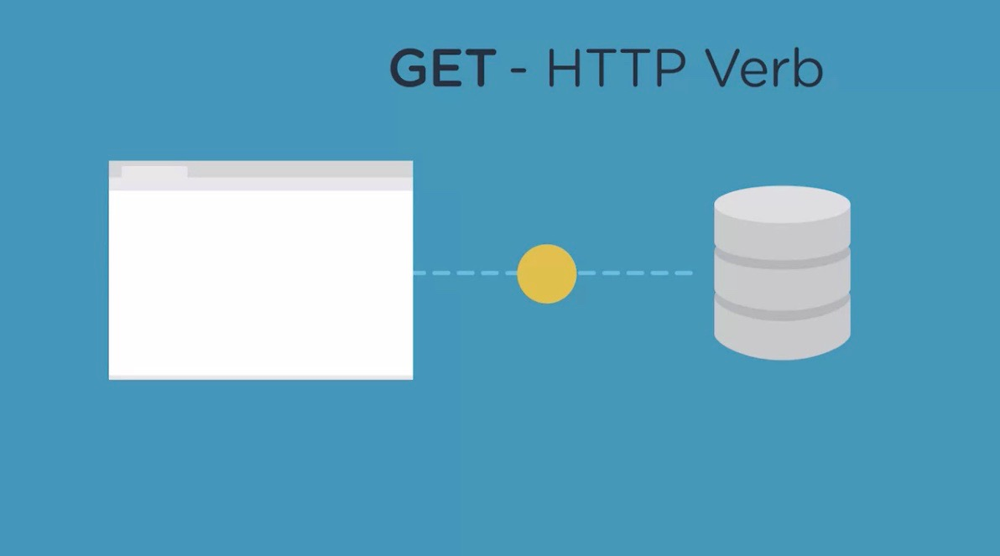

A developer's Blog Log #4
...Jason Nutt 02/19/2021
Headline day 4/ Express Routes...
A re-re-iterated version of compiled notes & learning
From Treehouse, YouTube, DevEd, Node.js Docs and more...
Blog # 4 Now let's see how Routing works in express with Node.js!...

Express handles requests through routes that we can setup in the app.
From a user's perspective, a route is just like a URL.
Like
teamtreehouse.com/about, teamtreehouse.com/home, or teamtreehouse.com/account
It's called a route, because it's the path a user takes to access data on a server.
From the application's perspective, a route also called an end point, is a command to run a specific function.
Which in turn sends a response back to the client
For example, teamtreehouse.com/about tells the application to get the contents for the about page.
Home might direct users to the frontpage of the application
I think YOU see where this is going...
When you type your URL into your browser and hit return,
the browser sends what's called a get request to the server
This means, you are asking to view or get a web page.
Get is known as an HTTP verb,
because it represents what the client wants the server to do.

In this case of get the client is simply asking the server to return something, but what?
This is where the URL comes in, which is more like a noun or a resource as its called.
The URL tells the server what to get for the client.
Get request are the most common requests made by browsers, and
a server responds to a get request by sending information off in a web page.
But a browser can also send information to the server, for example,
when submitting a for to order something online this is called a post request.
A client sends the values of the form, and
the server receives them and processes those values in some way.
There are other HTTP verbs besides get and post, but
we won't cover them in this course.
What happens when the client makes a request to a route that the server isn't set up to respond to?
Settle down, we can't learn ALL of this in a day LOL...see you tomorrow.! Or maybe tonight!!
OK so, what does happen when the client makes a request to a route that the serve is'nt set up to respond to?
For example, a URL like https://teamtreehouse.com/does-not-exist.
In this case, the server would send back an error, like a page not found error.
This is commonly called a 404, because of the associated status code.
Here is a link where you can read more about status codes.
Here is another link that you can read ALL about different request methods.